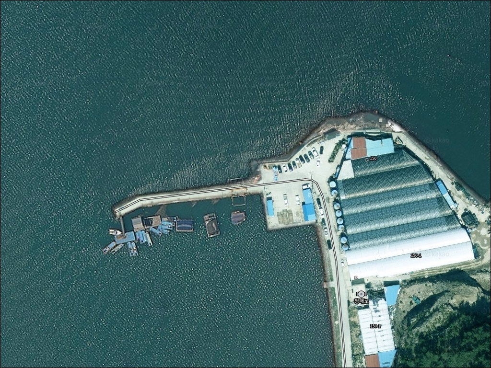
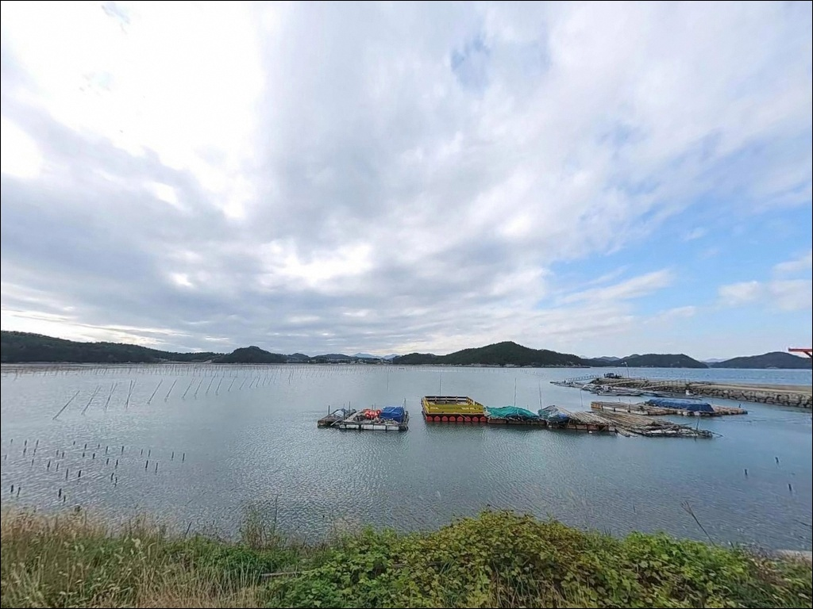
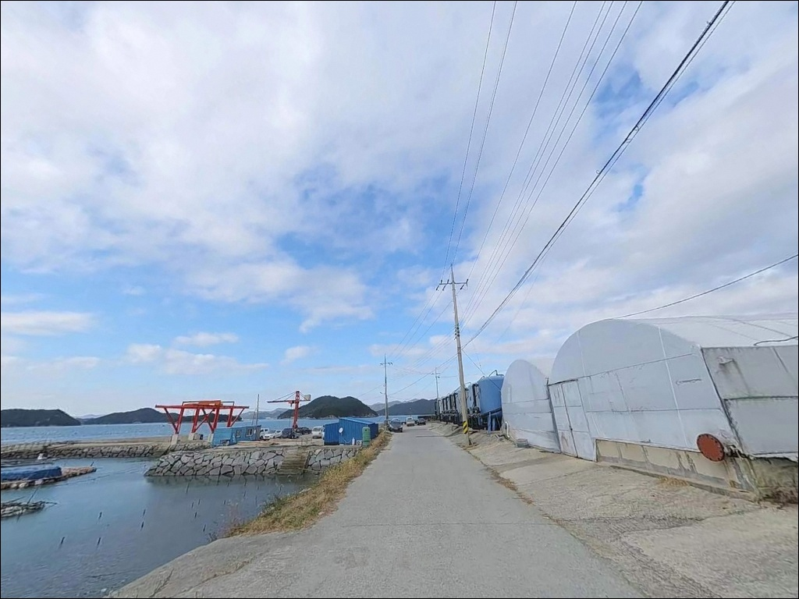
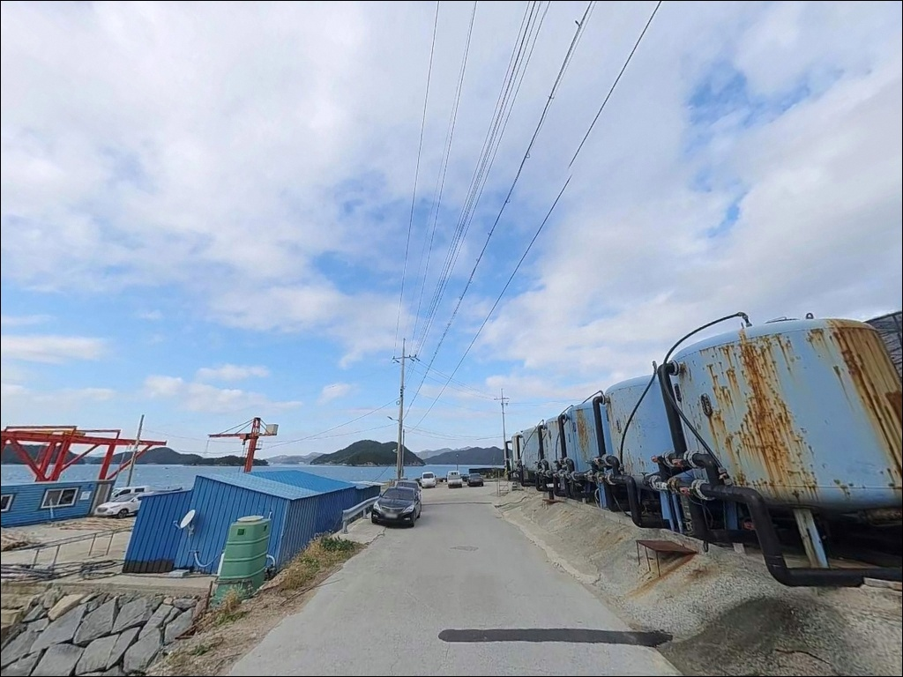
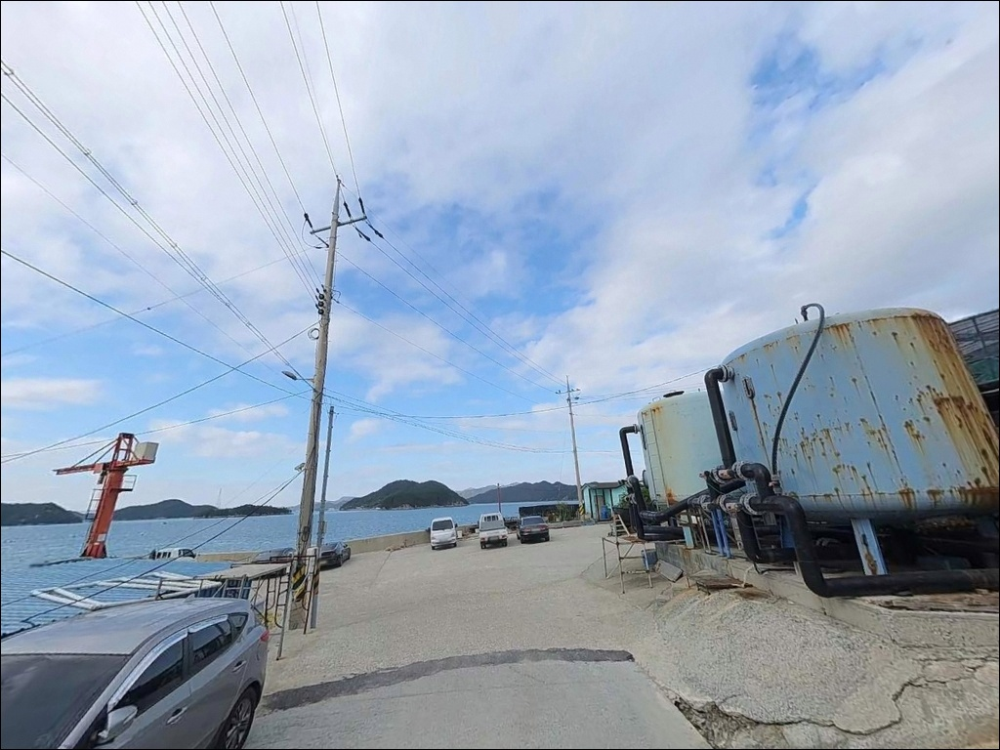
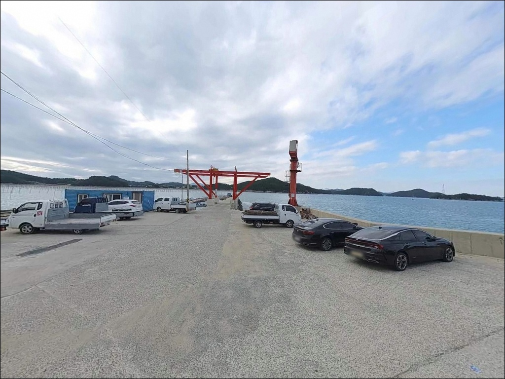
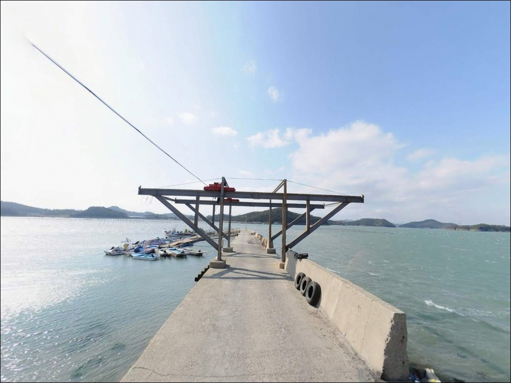
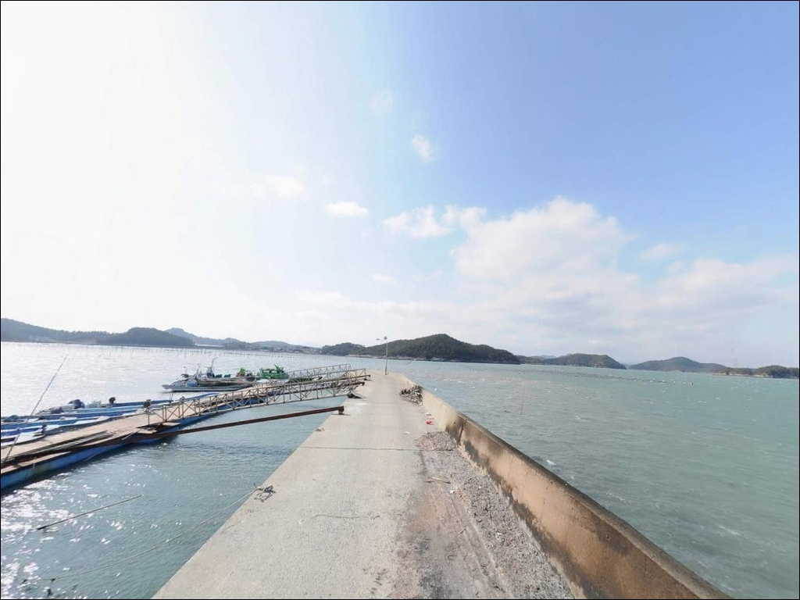
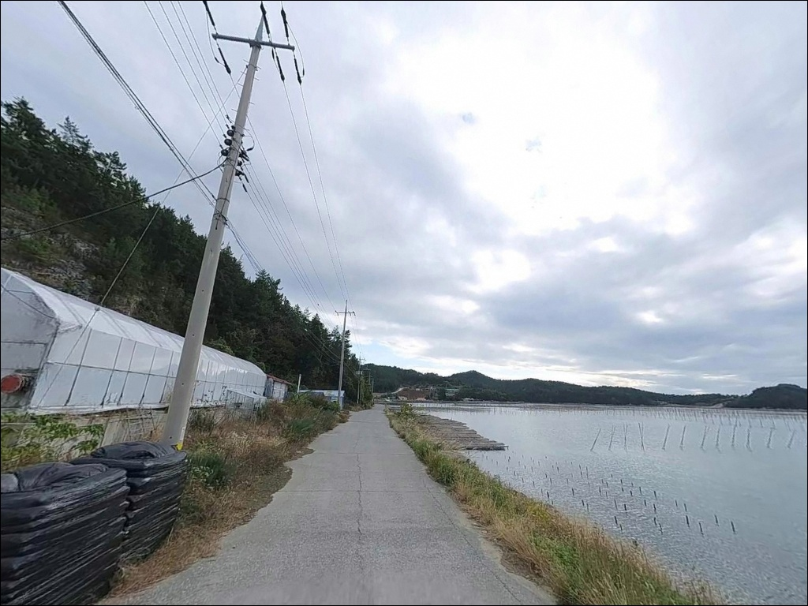

이 페이지에는 광고(제휴 링크 포함)가 있으며, 광고 링크를 통해 구매하면 운영자가 판매 수익 또는 수수료를 받을 수 있습니다. 포인트 사진: 카카오맵 스카이뷰·로드뷰. 이 페이지의 지도·사진 이미지는 카카오맵의 실제 서비스 이미지와 다를 수 있습니다.

섬목방파제 (우두항)
전남 완도군 약산면 우두리 447-32
외항 테트라포트 끝단은
조류 소통이 가장 강한 자리입니다.
물때를 맞춰 들어가도
이 자리를 먼저 차지한 낚시인이 있으면
찌낚시도 에깅도 방향을 바꿔야 합니다.
자리 선점이 조과보다 먼저 결정되는
포인트라는 점을 출발 전에 인식해야 합니다.
약산도 북동단 우두리 해안에 자리한
섬목방파제는 지방어항(우두항)으로 관리되는 포인트입니다.
긴 본 방파제에 짧은 보조 방파제와 선착장이 결합된 구조로,
완도권 남해 해역의 어종 다양성을
방파제 한 곳에서 누릴 수 있는 환경입니다.
약산대교를 통해 고금도와 연결되어
접근성도 양호한 편입니다.
이 글은
섬목방파제의 진입 여건, 차박 체류 환경,
낚시 스타일별 지형 기반 공략 조건에 집중합니다.
조황 단정이나 특정 어종 보장은
이 글의 범위에 포함되지 않습니다.

약산도 진입은 고금대교에서 고금도를 경유한 뒤
약산대교를 건너는 경로가 기본입니다.
섬목방파제까지 이어지는 도로는
왕복 2차선으로 차량 진입이 매우 원활한 편이며,
비포장 구간 없이 방파제 초입까지
포장도로가 이어져 있습니다.
방파제 입구와 선착장 배후 부지에
넓은 회차 공간이 확보되어 있어
대형 SUV나 차박 장비를 갖춘 차량도
회차에 큰 어려움이 없습니다.
주차는 방파제 시작 지점의 넓은 공터와
선착장 배후 부지 두 곳을 활용하는 방식이 일반적입니다.
지방어항 시설로 관리되는 곳이니만큼
어선 이동 동선과 하역 공간을 먼저 확인하고
주차 위치를 정하는 것이 기본 매너입니다.
테트라포트 구간 진입 시에는
발판이 고르지 않은 구간이 있으므로
미끄럼 방지화를 갖추는 편이 좋습니다.

방파제 초입 넓은 공터는
낚시 후 하룻밤 머무는 용도로 활용하기에
공간 자체는 무리 없는 수준입니다.
우두리 민가는 방파제와 일정 거리가 있어
야간 프라이버시는 상대적으로 양호한 편입니다.
어항 시설로 가로등이 설치되어 있어
방파제 입구 구간은 야간 시야 확보가 가능합니다.
다만 방파제 끝단으로 갈수록 조명이 약해지므로
개인 헤드랜턴은 반드시 지참해야 합니다.
외항이 열린 구조라 기상에 따라 바람 영향을 받는 경우가 있어
출발 전 기상청 해상예보를 확인하는 편이 좋습니다.

방파제 인근에 화장실 건물이 설치되어 있습니다.
반경 3km 이내 약산면 소재지 방향으로 이동하면
소규모 마트와 식당을 이용할 수 있는 환경입니다.
출발 전 기본 식수와 식량을 갖추는 편이 효율적이며,
낚시 소품이 부족할 경우는
당목항 방향으로 이동하는 동선이 가장 가깝습니다.
의료 응급 상황이 발생할 경우
완도읍 완도병원 또는 강진군 강진의료원까지
이동 시간이 30~60분 이상 소요됩니다.
섬 지역 특성상 비상약품은
출발 전 충분히 챙겨두는 것이 기본 준비입니다.

섬목방파제 방문 전 가장 먼저 확인할 것은 물때입니다.
외항이 직접 열린 구조라
조류 흐름이 물때에 따라 뚜렷하게 달라지는 편입니다.
바다타임에서 약산도 기준 물때를 확인하고
중들물~중썰물 타이밍을 중심으로
입장 시각을 맞추는 것이 기본 전략입니다.
외항 테트라포트 구간 낚시 시
미끄럼 방지 신발과 구명조끼 착용은 필수입니다.
야간 에깅이나 볼락 루어 낚시를 계획한다면
집어등 투사 방향에 주의가 필요합니다.
선박 입출항에 방해가 되는 집어등 사용은
어민과의 마찰을 유발할 수 있습니다.
테트라포트 구간은 채비 손실이 잦은 편이므로
여분 채비를 넉넉하게 챙기는 것이 좋습니다.
발생한 쓰레기는 낚싯줄·봉돌 포장재를 포함해
반드시 수거하여 귀가 시 처리해야 합니다.

섬목방파제의 지형 핵심은
외항 방향으로 뻗은 본 방파제 구조에 있습니다.
외항 측에는 테트라포트가 거칠게 놓여 있고,
내항은 석축과 콘크리트 직벽 구조입니다.
방파제 끝단 수심은 7~10m 내외로 형성되며,
바닥 지형은 사질대와 여밭이 섞여 있는 구조입니다.
외항 테트라포트 끝단 구간은
조류가 집중되는 자리입니다.
들물과 썰물 모두 흐름이 형성되는 방향이라
감성돔 찌낚시에서 이 조류 라인을
잡느냐 못 잡느냐가 조과를 결정합니다.
조류가 살아있는 타이밍에 끝단 자리를 선점하는 것이
이 포인트 공략의 기본 전제입니다.
최신 조황은 출조 전 "섬목방파제 조황 / 약산면 방파제 낚시"로
검색해 보시기 바랍니다.
방파제 꺾이는 지점도 놓치기 쉬운 자리입니다.
외항 조류와 내항 정온 수역이 교차하는 경계부로,
갑오징어 에깅에서 반응이 나오는 구간입니다.
바닥 지형이 사질대와 여밭이 혼합된 구조라
중썰물~중들물 시간대 바닥 탐색이 유효합니다.

외항 테트라포트 구간에서 가장 잘 맞는 낚시는
감성돔과 뱅에돔을 겨냥한 찌낚시입니다.
테트라포트 벽치기와 조류 흘림낚시가 모두 가능한 구조라
조류 방향에 따라 탐색 방식을 바꾸는 것이 효과적입니다.
외항 측 조류 라인이 살아있는 타이밍에
집중 공략하는 것이 기본 접근입니다.
원투낚시는 방파제 꺾이는 지점이나 끝단에서
외해 방향으로 장타 시 도다리, 보리멸, 붕장어를
기대해 볼 수 있는 방식입니다.
바닥이 사질대와 여밭이 혼합된 구조라
채비를 멀리 보낸 뒤 천천히 끌어오는 방식이
이 포인트에 잘 맞습니다.
갑오징어 에깅은 방파제 내항 경계부와
콧부리 구간이 주 탐색 자리입니다.
완도권은 갑오징어 낚시 활성 해역으로,
봄부터 가을까지 시즌 폭이 넓은 편입니다.
야간에는 볼락 라이트게임도 병행할 수 있습니다.
방파제 석축 경계선과 테트라포트 근처를
소형 지그헤드 채비로 천천히 탐색하는 방식이 어울립니다.
외항 테트라포트 끝단은 조류 변화가 가장 뚜렷한 구간으로,
물때를 맞추면 감성돔·갑오징어 반응이 살아나는 자리입니다.

섬목방파제에서 자리 선점이 여의치 않거나
조류 조건이 기대에 못 미칠 때는
당목항이 가장 현실적인 첫 번째 대안입니다.
차로 약 15분 거리에 있으며
대형 선착장과 방파제 구조를 갖추고 있어
어떤 낚시 스타일로도 운용이 가능합니다.
약산도 내 해안을 따라 이동하면
화가리방파제와 득암방파제도 탐색해볼 수 있습니다.
같은 약산도 해역 내 포인트라
어종 구성과 조류 패턴이 유사하며,
섬목방파제를 기점으로 약산도 일주 동선을 구성하면
효율적인 탐방이 가능합니다.
차박 대체 후보로는 가사해수욕장 주차장이 유효합니다.
화장실과 편의시설 이용이 가능한 평지 주차 구조로
섬목방파제 주차 공간이 선점된 경우
이동 기점으로 삼기 좋은 조건입니다.
진입로와 조류 판단이 섬목방파제 방문의
성패를 결정합니다.

감성돔 찌낚시나 갑오징어 에깅을 즐기는 낚시인이라면
섬목방파제의 외항 테트라포트 구조는
지형 조건이 잘 맞는 포인트입니다.
수심 7~10m의 끝단 구간과
조류가 살아있는 콧부리 자리는
물때만 맞으면 복수 방식 공략이 가능한 환경입니다.
다만 끝단 자리는 먼저 선점한 낚시인에게 유리한 구조라
입장 시각이 조과를 결정하는 변수입니다.
야간 에깅이나 볼락 루어를 계획한다면
테트라포트 위 이동 시 낙상 위험에
각별히 주의해야 합니다.
물때 확인, 자리 선점 타이밍, 안전 장비 준비,
이 세 가지를 갖추고 간다면
완도권 방파제 낚시의 매력을
제대로 느낄 수 있는 포인트입니다.
약산대교를 건너 우두리 해안에 자리를 잡고
낚시를 마친 뒤 하룻밤 머무는 차박 여행자라면,
방파제 초입 공터에서 완도 남해의 밤 풍경을
조용히 즐길 수 있는 출조가 됩니다.